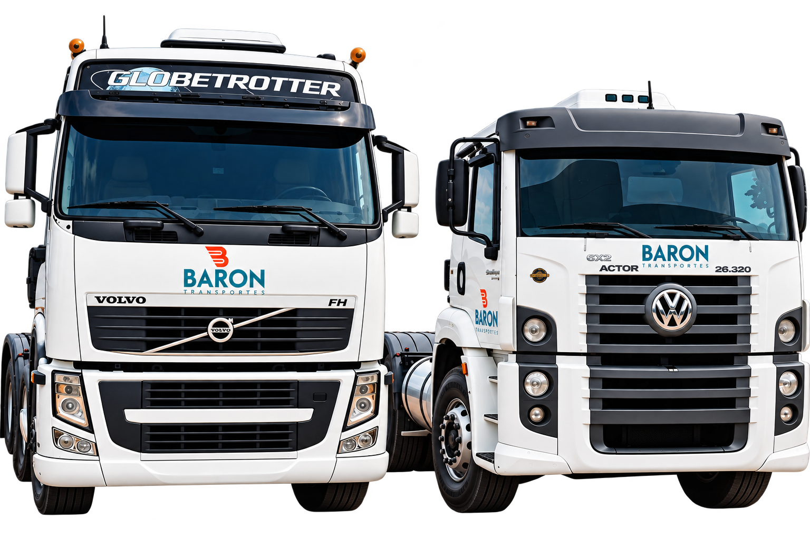
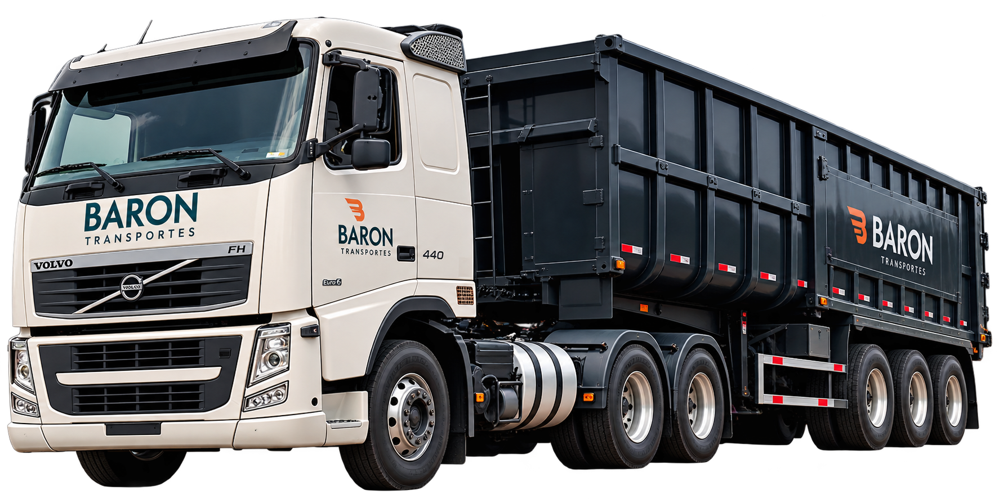

Na Baron Transportes, contamos com uma frota moderna, diversificada e preparada para atender diferentes necessidades de transporte e logística. Trabalhamos com veículos novos e revisados, garantindo mais segurança, eficiência e confiabilidade em cada operação.
Nossa estrutura conta com carga seca, caçambão, caçambinha, rodo caçambão e rodo container, permitindo atender operações de diferentes portes e características. Essa variedade nos proporciona flexibilidade para oferecer a solução mais adequada para cada tipo de carga e operação.
Investimos continuamente na renovação e manutenção da nossa frota, buscando proporcionar maior disponibilidade, segurança operacional e eficiência logística aos nossos clientes. Com veículos preparados e uma equipe comprometida, a Baron Transportes está pronta para entregar agilidade, qualidade e confiança em cada quilômetro.
Além de uma frota nova e constantemente renovada, contamos com uma rede de motoristas parceiros experientes e comprometidos com a qualidade e a segurança das operações. Todos os nossos parceiros passam por processos de análise e gerenciamento de risco, sendo aprovados pelas principais e maiores gerenciadoras de risco do mercado, garantindo que cada operação seja realizada dentro dos padrões exigidos por nossos clientes e pelo setor.

Araçariguama (Matriz)
Avenida Nossa Senhora da Penha, 550
CEP: 18148-000 - Ronda
Araçariguama – SP
Telefone: 11 99465-7856
© 2026 Baron Transportes - Todos os direitos reservados.
Desenvolvido por Fellype Amorim